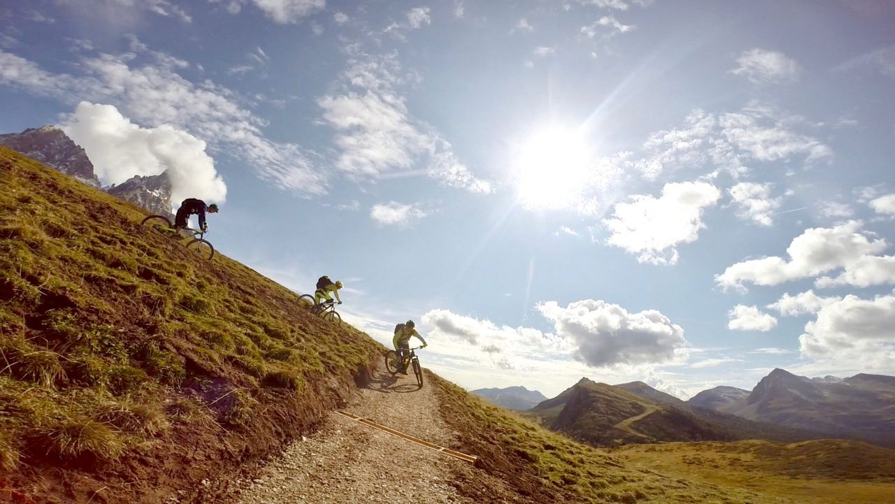

We Ride. We Climb. We Explore.
A community of outdoor enthusiasts, from Hampshire trails to Dolomite ridgelines, forging authentic relationships through shared adventure.
Until the end of January
Rebuilding season
Every mountain year has its quiet months, and this winter is ours. Until the end of January, personal and work commitments come first, and we’re taking time to recover and rebuild.
For now there’s no regular schedule: climbing sessions stay small, rides are fewer, and the miles are slower. Some days will still happen, in small groups and at short notice. Message us to hear what’s planned.
The full rhythm returns in February.
What We Believe
The most profound insights arrive in motion. Not in meeting rooms. Not on screens. Through the physical reality of shared effort: grinding up a climb together, belaying someone through their crux move, reading the mountain before the weather turns.
Fab Rides isn’t a club, and it isn’t about making money. There are no clients here, only fellow adventurers. What we trade is time, effort and stories. Pochi ma buoni. Few but good.
Real adventure takes you out of your comfort zone with no idea of what the outcome will be.
What We Do
Ride
Mountain biking across Hampshire, Surrey Hills, and the Dolomites. Social first, performance second.
Explore →Our Rhythm
Paused this winter: our regular rhythm returns in February.
| When | What | Who |
|---|---|---|
| Mon, Wed, Fri evenings | Indoor climbing at Parthian Southampton | All levels |
| Friday mornings | Local MTB loop | Regulars, flexible schedules |
| Saturdays | Main community ride: Surrey Hills, QECP, destination days | Open to all |
| Sunday mornings | Family-friendly rides, gentler pace, post-ride coffee | Families, newer riders |
| Seasonal trips | Valtellina (Easter to October), Dolomites (May to July), ski touring (January and April), further afield | Open to all |
No booking systems. Just an invitation to join.
For now, Fab Rides runs under Fab Campaigns Ltd. We’re deciding whether to keep it that way or give Fab Rides a structure of its own, and we’ll share the decision here.
Fab Riders
Fab Riders is the name for all of us: friends new and old who share this ethos. The community has taken us from Hampshire trails to a stage race in South Africa, from family cyclocross sessions to multi-pitch routes in the Dolomites.
The adventures feed directly into the writing. Each Friday, experiences from our rides, crags, and mountains find their way into Fab’s Friday Field Notes.